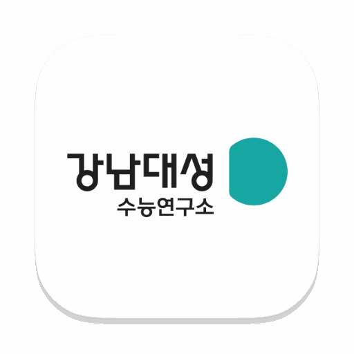
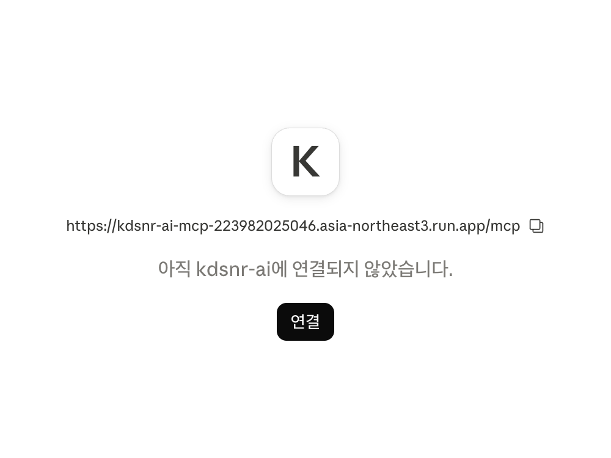
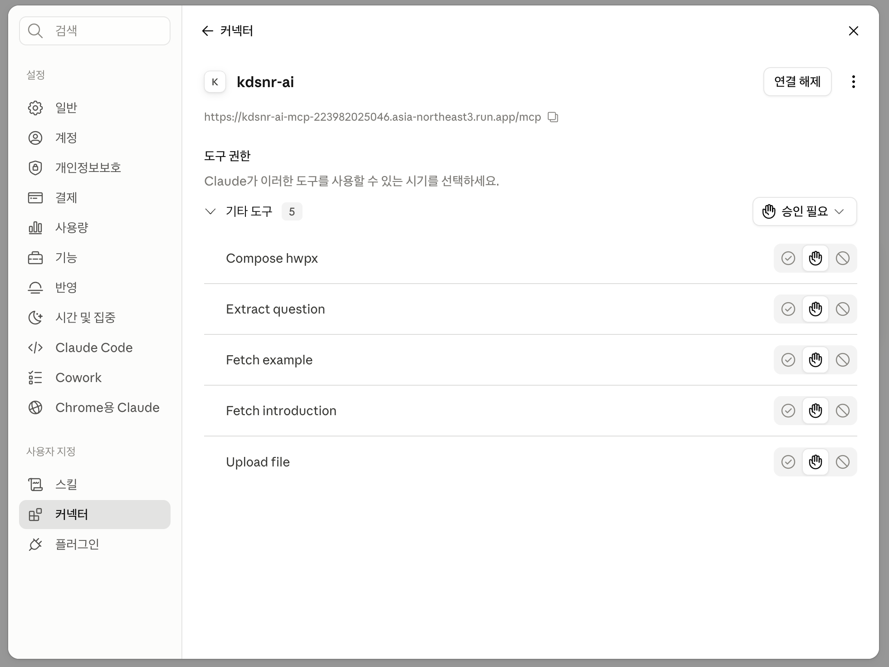

MCP Setup
kdsnr-ai MCP 연결 안내 페이지입니다.
연결·인증은 최초 1회만 진행합니다.
ChatGPT
1. Dashboard에서 사용 승인 받기
좌측 사이드바의 Dashboard를 열고 Google 계정으로 로그인합니다.
- 소속과 인적사항을 입력해 승인 요청을 제출합니다.
- 관리자 승인이 완료될 때까지 기다립니다.
- 승인된 Google 계정을 이후 ChatGPT 연결에도 그대로 사용합니다.
- Dashboard 승인 계정과 ChatGPT 플러그인 로그인 계정은 같아야 합니다.
- 승인 과정에서 문제가 있을 경우 kdsnrai@gmail.com으로 인적사항 및 소속과 함께 문의 부탁드립니다.
2. 사용자 지정 MCP 서버 추가 열기
ChatGPT 좌측 사이드바의 맞춤 설정에서 플러그인을 선택합니다. 플러그인 화면 우측 상단의 추가를 누르고 사용자 지정 MCP 서버 추가를 선택합니다.


3. 서버 정보 입력하기
사용자 지정 MCP 서버 추가 창에서 아래 항목을 순서대로 설정합니다.
| 항목 | 입력값 | 설명 |
|---|---|---|
| 아이콘 | 선택 사항 | 아래에서 내려받은 PNG 파일을 사용할 수 있습니다. |
| 이름 | kdsnr-ai | ChatGPT의 플러그인 목록에 표시되는 이름입니다. |
| 설명 | 선택 사항 | 입력하지 않아도 됩니다. |
| 연결 | 서버 URL | 터널이 아닌 서버 URL을 선택합니다. |
| 인증 | OAuth | 고급 OAuth 설정은 변경하지 않습니다. |
서버 URL 입력란에는 아래 주소를 그대로 붙여 넣습니다. 마지막으로 위험성 안내 아래의 확인란을 선택하고 플러그인으로 생성을 누릅니다.
https://kdsnr-ai-mcp-223982025046.asia-northeast3.run.app/mcp


4. Google 계정으로 연결하기
kdsnr-ai 연결 창에서 kdsnr-ai 연결을 누릅니다. 로그인 창이 열리면 Google로 계속하기를 누르고 Dashboard 승인을 받은 Google 계정을 선택한 뒤, 액세스 요청 화면에서 액세스 허용을 누릅니다.


5. 사용하기
새 대화의 입력창에 @kdsnr-ai를 입력해 플러그인을 선택한 뒤, 문항 읽기나 HWPX 파일 생성을 평소와 같이 요청합니다. ChatGPT가 kdsnr-ai 기능을 실행하기 전에 확인창을 표시하면 허용합니다.

Claude
1. Dashboard에서 사용 승인 받기
좌측 사이드바의 Dashboard를 열고 Google 계정으로 로그인합니다.
- 소속과 인적사항을 입력해 승인 요청을 제출합니다.
- 관리자 승인이 완료될 때까지 기다립니다.
- 승인된 Google 계정을 이후 Claude 연결에도 그대로 사용합니다.
2. 커스텀 커넥터 추가 화면 열기
Claude 좌측 사이드바에서 사용자 지정을 선택하고 커넥터 탭으로 이동합니다. 우측 상단의 추가를 누르고 커스텀 커넥터 추가를 선택합니다.


3. 커넥터 정보 입력하기
커스텀 커넥터 추가 창에서 아래 항목을 입력하고 계속을 누릅니다. 이어지는 인증 화면은 자동으로 감지된 기본값(지금 로그인, 자동으로 등록)을 그대로 두고 아래의 추가를 누릅니다.
| 항목 | 입력값 | 설명 |
|---|---|---|
| 이름 | kdsnr-ai | Claude의 커넥터 목록에 표시되는 이름입니다. |
| 원격 MCP 서버 URL | 아래 주소 | 주소 끝의 /mcp까지 입력합니다. |
| 인증·OAuth 클라이언트 | 감지된 기본값 | 요청 헤더와 고급 설정은 비워 둡니다. |
https://kdsnr-ai-mcp-223982025046.asia-northeast3.run.app/mcp

4. Google 계정으로 연결하기
커넥터 화면에 아직 연결되지 않았습니다가 표시되면 연결을 누릅니다. 로그인 창이 열리면 Google로 계속하기를 누르고 Dashboard 승인을 받은 Google 계정을 선택한 뒤, 액세스 요청 화면에서 액세스 허용을 누릅니다.


5. 등록 확인하기
커넥터 상세 화면에 연결 해제 버튼과 kdsnr-ai 도구 11개가 표시되면 등록이 완료된 것입니다. 도구 권한은 승인 필요 상태로 두어도 됩니다.

6. 사용하기
새 대화의 입력창에 @kdsnr-ai를 입력해 커넥터를 선택한 뒤, 문항 읽기나 HWPX 파일 생성을 평소와 같이 요청합니다. Claude가 kdsnr-ai 기능을 실행하기 전에 확인창을 표시합니다. 한 번만 실행하려면 한 번만 허용, 이후 같은 확인을 생략하려면 항상 허용을 선택합니다.


Gemini
- Gemini에서 MCP 서버를 연결하려면 Google AI Pro 이상의 유료 요금제를 구독해야 합니다. 2026년 10월 기준 자세한 내용은 여기를 참고해 주세요.
- 연결한 kdsnr-ai는 일반 채팅에서는 호출되지 않습니다. 작업 메뉴에서만 사용할 수 있습니다.
1. Dashboard에서 사용 승인 받기
좌측 사이드바의 Dashboard를 열고 Google 계정으로 로그인합니다.
- 소속과 인적사항을 입력해 승인 요청을 제출합니다.
- 관리자 승인이 완료될 때까지 기다립니다.
- 승인된 Google 계정을 이후 Gemini 연결에도 그대로 사용합니다.
2. 연결된 앱 열기
Gemini 좌측 사이드바에서 맞춤설정을 선택하고, 상단의 커넥터 탭으로 이동합니다. 연결된 앱 오른쪽의 + 맞춤 버튼을 누릅니다.


3. 서버 URL 입력하기
MCP 서버에 연결 창의 MCP 서버 URL 입력란에 아래 주소를 그대로 붙여 넣고 다음을 누릅니다.
https://kdsnr-ai-mcp-223982025046.asia-northeast3.run.app/mcp| 항목 | 입력값 | 설명 |
|---|---|---|
| MCP 서버 URL | 위 주소 | 주소 끝의 /mcp까지 입력합니다. |
| 추가 설정 | 입력하지 않음 | OAuth 클라이언트 ID와 시크릿은 비워 둡니다. |

4. Google 계정 선택하기
kdsnr-ai 로그인 창이 열리면 Google로 계속하기를 누르고, 계정 선택 화면에서 Dashboard 승인을 받은 Google 계정을 고릅니다.


5. 연결 허용하기
WorkOS 로그인 화면에서 계속을 누르고, 액세스 요청 화면에서 액세스 허용을 누릅니다.


6. 이름 확인하고 저장하기
맞춤 앱 저장 창에 이름과 사용 가능한 작업 목록이 표시되면 연결을 누릅니다. 이름은 Kdsnr Ai로 자동 입력되며 그대로 두어도 됩니다.

7. 사용하기
작업에서 요청하기
kdsnr-ai는 일반 채팅이 아니라 작업에서만 사용할 수 있습니다. 입력창 아래의 채팅 / 작업 전환에서 작업을 선택한 뒤, 요청 앞에 @Kdsnr Ai를 붙여 문항 읽기나 HWPX 파일 생성을 평소와 같이 요청합니다.

도구 실행 허용
Gemini가 kdsnr-ai 기능을 실행하기 전에 확인창을 표시합니다. 실행할 도구를 확인하고 허용을 누르면 kdsnr-ai에서 가져온 결과가 작업에 표시됩니다.